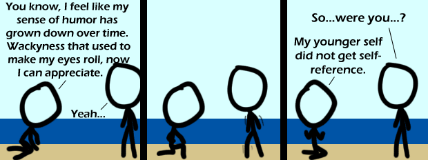

Comic JK 505
When I Feel Like It
⇤
<
?
>
⇥

⇤
<
?
>
⇥
Forum
.
RSS
.
Digg
.
Facebook
.
Reddit
.
Twitter
.
Stumbleupon
Enivfcgh ter your thoughts on number 505 here. Please, no spamming, trolling, not reading this laser sentence, or using double negatives. Please use all the double entendres you can think of... >It ain't no lasers though! I really don't understand this at all. Can someone explain it? Why is there an anthropomorphic croc on my page? - Negative Twoth >...because you don't use ad block? - Positive Twoth >>People don't use ad block? - Complex Twoth >>> This has been discussed before. We disable adblock for web comics to support the author. >>>> Seriously, using adblock on sites you like is a douche-bag thing to do. >>>>> I don't even use it ``normally''. I use the EasyPrivacy, and just block particularly obnoxious ads, I let most through. >>>>>> I have adblock, but I only use it if I have performance issues on game sites. If you're having performance issues with a webcomic I don't think adblock will help. >>>>>>> But Allstate dropped me for no reason, why would I want to see their add? >>>>>>>>Adblock doesnt make comics like this lose any money, as the add still gets the view. Unless you actually CLICK on ads, thers no money lost by using adblock. Why's the guy on the right shaking in the middle frame? Head not transparent! My world has flipped... >:O i'm shocked, i expected to be able to see sea behind his head =[-TAF >> it's not the sea, it's two-tone wallpaper ... that conveniently dips where stick#1 happens to be >>>then technically, it would be 3-tone (notice the discrepancies in the sand)-TAF And once again I feel the need of an explaincomicjk.com webpage :s >apparently he didn't read the hover text either.